지적기사 (2020-09-26 기출문제)
1과목: 지적측량
1. 광파거리측랑기의 프리즘 정수와 관련하여 보정하는 사항은?
- 경사보정
- 기상보정
- 영점보정
- 투영보정
(정답률: 68%)

2. 경계점좌표등록부 시행지역에서 지적도근점의 측랑성과와 검사성과의 연결교차 기준은?
- 0.15m 이내
- 0.20m 이내
- 0.25m 이내
- 0.30m 이내
(정답률: 76%)
3. 축척 1200분의 1 지역에서 도곽선의 신축랑이 +2.0mm 일 때 도곽의 신축에 따른 면적보정계수는?
- 0.99328
- 0.99224
- 0.98929
- 0.98844
(정답률: 53%)
4. 세부측랑 중 뱃셀법에 의한 방식은 어디에 해당하는가?
- 방사법
- 전방교회법
- 측방교회법
- 후방교회법
(정답률: 66%)
5. 도선법과 다각망도선업에 따른 지적도근점의 각도 관측에서 도선별 폐색오차의 허용범위 기준으로 틀린 것은? (단. n은 폐색변을 포함한 변의 수를 말한다.)
- 방위각법에 따르는 경우 : 1등도선 ±√n분 이내
- 방위각법에 따르는 경우 : 2등도선 ±2√n분 이내
- 배각법에 따르는 경우 : 1등도선 ±20√n초 이내
- 배각법에 따르는 경우 : 2등도선 ±30√n초 이내
(정답률: 79%)
6. 평판측랑밥법에 따른 세부측랑을 방사법으로 하는 경우 1방향의 도상길이는 몇 cm 이하로 하여야 하는가?
- 3cm
- 5cm
- 8cm
- 10cm
(정답률: 63%)
7. 펑판측랑방법에 따른 세부측랑을 교회법으로 할 때 방향각의 교각은?
- 30°이상 150°이하로 한다.
- 20°이상 130°이하로 한다.
- 30°이상 120°이하로 한다.
- 50°이상 130°이하로 한다.
(정답률: 73%)
8. 우리나라 토지조사사업 당시 대삼각본점측량의 방법으로 틀린 것은?
- 전국 13개소에 기선을 설치하였다.
- 관측은 기선망에서 12대회의 방항관측을 실시하였다.
- 대삼각점은 펑균 점간거리 30km로 23개의 삼각망으로 구분하였다.
- 대삼각점은 위도 20’, 경도 15’의 방안 내에 10점이 배치되도록 하였다.
(정답률: 57%)
9. 지적삼각보조점측량을 다각망도선법에 의하여 시행하는 경우에 대한 설명으로 옳은 것은?
- 1 도선의 거리는 4km 이하로 한다.
- 4점 이상의 기지점을 포함한 결함다각방식에 따른다.
- 1도선의 점의 수는 기지점과 교점을 제외하고 5점 이하로 한다.
- 1도선의 점의 수는 기지점과 교점을 포함하여 6점 이하로 한다.
(정답률: 74%)
10. 지적삼각보조점의 각 점에서 같은 정도로 측정하여 생기는 각도오차의 소거방법으로 옳은 것은? (단， 2방향 교회에 의하고， 각 내각의 합계와 180도와의 차가 ±40초 이내인 경우)
- 변장에 비례하여 배분한다.
- 각의 크기에 비례하여 배분한다.
- 각의 크기에 역비례하여 배분한다.
- 삼각형의 각 내각에 고르게 배분한다.
(정답률: 56%)
11. 고초원점의 평면직각종횡선수치는 얼마인가?
- X=0m, Y=0m
- X=10000m, Y=30000m
- X=500000m, Y=200000m
- X=550000m, Y=200000m
(정답률: 70%)
12. 지적삼각점측량에서A점의 종선좌표가 1000m, 횡선좌표가 2000m, AB간의 평면거리가3210.987m, AB간의 방위각이 333°33'33.3"일 때의 B점의 횡선좌표는?
- 496.789m
- 570.237m
- 798.466m
- 1322.123m
(정답률: 55%)
13. 경위의측랑방법에 따른 세부측량에서 연직각의 관측은 정반으로 1회 관측하여 그 교차가 얼마 이내일 때에 그 평균치를 연직각으로 하는가?
- 2분 이내
- 3분 이내
- 4분 이내
- 5분 이내
(정답률: 72%)
14. 지적삼각점측량에 대한 설명으로 옳지 않은 것은?
- 지적삼각점표지는 관측후에 설치한다.
- 삼각형의 각 내각은 30도 이상 120도 이하로 한다.
- 지적삼각점의 일련변호는 측랑지역이 소재하고 있는 시·도 단위로 부여한다.
- 지적삼각점의 명칭은 측랑지역이 소재하고 있는 시 도의 명칭 중 두 글자를 선택한다.
(정답률: 63%)
15. 다음 중 지적삼각점성과를 관리하는 자는?
- 지적소관청
- 시·도지사
- 국토교통부장관
- 행정안전부장관
(정답률: 65%)
16. 교회법에서 삼각형의 3내각을 같은 정도로 측정하였을 때에 그 합계 180°와의 차에 대한 배부는?
- 각의 크기에 비례하여 배부한다.
- 3등분하여 각각에 1/3 씩 배부한다.
- 각의 크기에 역비례하여 배부한다.
- 대변의 크기에 비례하여 배부한다.
(정답률: 60%)
17. 축척 1000분의 1로 평판측량을 할 때 제도의 허용오차 q=0.2mm 이내로 하려면 지적도근점을 중심으로 반경 몇 cm 이내에 있도록 평판을 설치하여야 하는가?
- 6cm
- 10cm
- 15cm
- 20cm
(정답률: 52%)
18. 지적삼각점측량 시 두 지점의 기지점에세 소구점까지 평면거리가 각각 4700m, 3900m일 때， 두 기지점에서 소구점의 표고를 계산한 교차는 얼마 이하이어야 하는가?
- 0.46m
- 0.47m
- 0.48m
- 0.50m
(정답률: 51%)
19. 지적도의 제도방법으로 틀린 것은?
- 도면의 윗 방항은 향상 북쪽이 되어야 한다.
- 경계선은 경계점과 경계점 사이를 직선으로 연결한다.
- 등록전환 할 때에는 지적도의 그 지번 및 지목을 말소한다.
- 말소된 경계를 다시 등록할 때에는 말소 정리 이전의 자료로 원상회복 정리한다.
(정답률: 64%)
20. 수펑각을 관측하는 경우 망원경을 정반으로 하여 측정하는 가장 큰 목적은?
- 망원경이 회전되기 때문에
- 관측오차를 발견하기 위하여
- 외심오차를 발견하기 위하여
- 기계조정에 의한 오차를 소거하기 위하여
(정답률: 71%)
2과목: 응용측량
21. 축척 1:50000 지형도에서 길이가 6.58cm인 두 점 A,B의 길이가 항공사진 촬영한 사진에서 23.03cm이었다면 항공사진의 촬영고도는? (단, 사진기의 초점거리는 21cm이다.)
- 2000m
- 2500m
- 3000m
- 3500m
(정답률: 41%)
22. 등고선의 성질에 대한 설명으로 틀린 것은?
- 등고선의 최대경사선과 직교한다.
- 동일 등고선 상에 있는 모든 점은 높이가 같다.
- 등고선은 절벽이나 동굴의 지형을 제외하고는 교차하지 않는다.
- 등고선은 폭포와 같이 도면 내외 어느 곳에서도 폐합되지 않는 경우가 있다.
(정답률: 50%)
23. 다음 중 수동적 센서 방식이 아닌 것은?
- 사진방식
- 선주사방식
- Laser방식
- Vidicon 방식
(정답률: 53%)
24. 초점거리 210mm. 사진크기 18cm×18cm인 카메라로 평지를 촬영한 항공사진 입체모델의 주정기선장이 60mm라면 종중복도는?
- 56%
- 61%
- 67%
- 72%
(정답률: 33%)
25. 단곡선 설치에 있어서 접선과 현이 이루는 각을 이용하여 곡선을 설치하는 방법은?
- 펀각설치법
- 지거설치법
- 중앙종거법
- 현펀거법
(정답률: 41%)
26. 축척 1:5000의 지형 측랑에서 위치의 허용오차를 도상±0.5mm, 실제 관측 높이의 허용오차를 ±1.0m로 하는 경우에 토지의 경사가 25°인 지형에서 발생할 수 있는 등고선의 최대 오차는?
- ±2.51m
- ±2.17m
- ±2.04m
- ±1.83m
(정답률: 19%)
27. 그림과 같이 측정 A의 밑에 기계를 세워 천장에 설치된 측점 A,B 를 관측하였을 때 두정의 높이차(H)는?
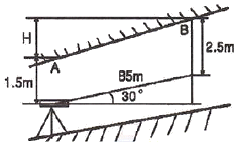
- 42.5m
- 43.5m
- 45.5m
- 46.5m
(정답률: 41%)
28. GNSS 측량에서 위도, 경도, 고도, 시간에 대한 차문해(differential solution)를 얻기 위해 필요한 최소 위성의 수는?
- 2
- 4
- 6
- 8
(정답률: 48%)
29. 수준기의 감도가 20"인 레벨(Level)을 사용하여 40m 떨어진 표척을 시준할 때 발성할 수 있는 시준 오차는?
- ±0.5mm
- ±3.9mm
- ±5.2mm
- ±8.5mm
(정답률: 37%)
30. 지하사설물측량에 대한 설명으로 옳은 것은?
- 전자기유도법 - 고가이고 판독기술이 요구된다.
- 지하레이더탐사법 - 비금속 탐지가 가능하다.
- 음파탐사법 - 지중에 있는 강자성체의 이상자기를 조사하는 방법이다.
- 전기탐사법 - 문화유적지 조사, 지중금속체 탐지에는 부적합하다.
(정답률: 32%)
31. 수준측랑에서 n회 기계를 설치하여 높이를 측정할 때 1회 기계 설치에 따른 표준오차가  이면 전체 높이에 대한 오차는?
이면 전체 높이에 대한 오차는?
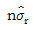
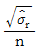
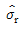
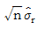
(정답률: 42%)
32. 노선측량의 작업 단계를 A~E와 같이 나눌 때, 일반적인 작업순서로 옳은 것은?
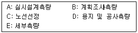
- A-C-D-E-B
- A-C-B-D-E
- C-A-D-B-E
- C-B-A-E-D
(정답률: 49%)
33. 현장에서 수준측량을 정확하게 수행하기 위해서 고려해야할 사항이 아닌 것은?
- 전시와 후시의 거리를 가능한 동일하게 한다.
- 기포가 중앙에 있을 때 읽는다.
- 표척이 연직으로 세워졌는지 확인한다.
- 레벨의 설치 횟수는 흘수회로 끝나도록 한다.
(정답률: 53%)
34. 설치되어 있는 기준점만으로 세부측량을 실시하기에 부족할 경우 설치되어 있는 기준점을 기준으로 지형측량에 필요한 새로운 측점을 관측하여 결정된 기준점은?
- 도근점
- 경사변환점
- 등각점
- 이점
(정답률: 51%)
35. 터널의 시점(P)과 종점(Q)의 좌표를 P(1200, 800, 75), Q(1600, 600, 100)로 하여 터널을 굴진할 경우 경사각은? (단, 좌표단위: m)
- 2° 11'59"
- 2° 13'19"
- 3° 11'59"
- 3° 13'19"
(정답률: 42%)
36. GPS에서 이용하는 좌표계는?
- WGS84
- Bessel
- JGD2000
- ITRF2000
(정답률: 62%)
37. 축척 1:50000의 지형도에서 A의 표고가 235m, B의 표고가 563m일 때 두 점 A, B 사이 주곡선 간격의 등고선 수는?
- 13
- 15
- 17
- 18
(정답률: 44%)
38. 완화곡선의 성질에 대한 설명으로 틀린 것은?
- 곡선의 반지름은 시점에서 원곡선의 반지름이 되고 종점에서는 무한대이다.
- 완화곡선의 접선은 시점에서 직선, 종점에서 원호에 접한다.
- 완화곡선에 연한 곡선반지름의 감소율은 캔트의 증가율과 동률로 된다.
- 종점에 있는 캔트는 원곡선의 캔트와 같게 된다.
(정답률: 43%)
39. 동서(종방향) 45km, 남북(횡방향) 25km 인 직사각형의 토지를 종중복도 60%, 횡중복도30%, 초점거리 150mm. 촬영고도 3000m, 사진크기 23cm×23cm 로 촬영하였을 경우에 필요한 입체 모델 수는?
- 100
- 125
- 150
- 200
(정답률: 34%)
40. 곡선의 반지름이 250m, 교각 80°20'의 원곡선을 설치하려고 한다. 시단현에 대한 편각이 2°10'이라면 시단현의 길이는?
- 16.29m
- 17.29m
- 17.45m
- 18.91m
(정답률: 34%)
3과목: 토지정보체계론
41. 토지정보시스템의 발전 과정에 대한 설명으로 옳지 않은 것은?
- 1950년대 미국 워싱턴 대학에서 연구를 시작하여 1960년대 캐나다의 자원관리를 목적으로 CGIS(Canadian GIS) 가 개발되어 각국에 보급되었다.
- 1970년대에는 GIS전문회사가 출현되어 토지나 공공시설의 관리를 목적으로 시범적인 개발계획을 수행하였다.
- 1980년대에는 개발도상국의 GIS 도입과 구축이 활발히 진행되면서 위상정보의 구축과 관계형 데이터베이스의 기술발전 및 워크스테이션 도입으로 활성화되었다.
- 1990년대에는 Network 기술의 발달로 중앙집중형에서 지역 분산현 데이터베이스의 구축으로 변환되어 경제적인 공간데이터베이스의 구축과 운용이 가능하게 되었다.
(정답률: 33%)
42. 한국토지정보시스템 운영기관의 장이 데이터를 백업해야 하는 주기는?
- 일 1회
- 주 1회
- 월 1회
- 연 1회
(정답률: 51%)
43. SDTS(Spatial Data Transfer standard)를 통한 데이터변환에 있어 최소 단위의 체적으로 표현되는 3차원 객체의 정의는?
- Chain
- Voxel
- GT-ring
- 2D-Manifold
(정답률: 39%)
44. 국토교통부장관이 시·군·구 자료를 취합하여 지적통계를 작성하는 주기로 옳은 것은?
- 매일
- 매주
- 매월
- 매년
(정답률: 36%)
45. 토지정보체계의 특징으로 옳지 않은 것은?
- 편리한 자료 검색
- 전문화에 따른 호환성 배제
- 변동자료의 신속 정확한 처리
- 토지권리에 대한 분석과 정보제공
(정답률: 57%)
46. 사용자권한 등록관리청이 지적정보관리체계 사용자권한 등록 신청 내용을 심사하여 사용자권한 등록 신청 내용을 심사하여 사용자권한 등록파일에 등록하여야 하는 사항은 모두 나열한 것은?
- 사용자의 소속 및 권한과 비밀번호
- 사용자의 이름 및 권한과 사용자번호
- 사용자의 이름 및 권한과 사용자번호 및 비밀번호
- 사용자의 소속 및 사용자번호 및 권한과 비밀번호
(정답률: 42%)
47. 도형자료의 입력 방법에 대한 설명으로 옳지 않은 것은?
- 수치형태의 자료입력 방법은 키보드를 이용한다.
- 항공사진에 의한 도면자료 입력은 디지타이저를 이용한다.
- 스캐너에 의한 방법은 별도의 자료변환 작업을 필요로 한다.
- 도형자료 입력은 수치형태의 자료 입력과 도면형태의 자료 입력이 있다.
(정답률: 34%)
48. 벡터자료를 래스터자료로 자료 변환하는 것은?
- 섹션화
- 필터링
- 벡터라이징
- 래스터라이징
(정답률: 56%)
49. 데이터베이스에서 속성자료의 형태에 대한 설명으로 옳지 않은 것은?
- 법규집, 일반보고서 등의 자료를 말한다.
- 통계자료, 관측자료, 범례 등의 형태로 구성되어 있다.
- 선 또는 다각형과 입체의 형태로 표현되는 자료이다.
- 지리적 객체와 관련된 정보와 문자 형식으로 구성되어 있다.
(정답률: 46%)
50. 한국토지정보시스템에 대한 설명으로 옳은 것은?
- PBLIS 와 LMIS를 통합하여 새로 구축한 시스템이다.
- 지하시설물관리를 중심으로 각 지자체에서 구축한 것이다.
- 한국토지정보시스템은 National Geographic Information Systems의 약자로 NGIS라 한다.
- 한국토지정보시스템은 지적공무관리시스템과 지적측량성과시스템으로 구성되어 있다.
(정답률: 53%)
51. 한국토지정보시스템에서 사용할 수 있는 GIS엔진이 아닌 것은?
- Java
- Zeus
- Gothic
- ArcSDE
(정답률: 31%)
52. 래스터자료의 중첩분석에서 A xor B의| 결과로 옳은 것은? (단, 그림에서 음영 셀은 참값을 의미한다. (단, 그림에서 음영 셀은 참값을 의미한다.)
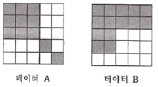
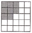
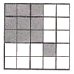
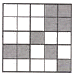
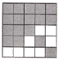
(정답률: 36%)
53. 제2차 NGIS(국가GIS)사업의 주요 추진전략에 해당하지 않는 것은?
- 지리정보의 통합
- 기온지리정보 구축
- GIS 전문인력 양성
- 지리정보 유통체계 구축
(정답률: 22%)
54. 벡터자료의 저장 모형 중 위상(Topology)모형에 대한 설명으로 옳지 않은 것은?
- 좌표데이터만을 사용할 때보다 다양한 공간 분석이 가능하다.
- 공간 객체 간의 위상정보를 저장하는데 보편적으로 사용되는 방식이다.
- 인접한 폴리곤 간의 공통 경계는 각 폴리곤에 대하여 반드시 두 번 기록되어야 한다.
- 다각형의 형상(shape), 인접성(neighborhood), 계급성(hierarchy)을 묘사할 수 있는 정보를 제공한다.
(정답률: 46%)
55. 지적정보관리체계로 처리하는 지적공부정리 등의 사용자권한 등록파일을 등록할 때의 사용자 비밀번호 실정 기준으로 옳은 것은?
- 4자리부터 12자리까지의 범위에서 사용자가 정하여 사용한다.
- 6자리부터 16자리까지의 범위에서 사용자가 정하여 사용한다.
- 영문을 포함하여 3자리부터 12자리까지의 범위에서 사용자가 정하여 사용한다.
- 영문을 포함하여 5자리부터 16자리까지의 범위에서 사용자가 정하여 사용한다.
(정답률: 48%)
56. 지적재조사사업 시스템의 구축과 관련한 내용으로 옳지 않은 것은?
- 공개시스템으로 구축한다.
- 토지현황조사, 새로운 지적공무 및 등기촉탁, 건축물 위치 및 건물 표시 등의 정보를 시스템에 입력한다.
- 토지소유자 등이 지적재조사사업과 관련한 정보를 인터넷 등을 통하여 실시간 열람할 수 있도록 구축한다.
- 취득된 필지경계 정보의 안정적인 관리를 위하여 관련 행정정보와의 연계 활용이 발생하지 않도록 보안 시스템으로 구축한다.
(정답률: 45%)
57. 다음 중 SQL 같은 표준 질의어를 사용하여 복잡한 질의를 간단하게 표현할 수 있게하는 데이터베이스 모형은?
- 관계형(relational)
- 계층형(hierarchical)
- 네트워크형(netwokr)
- 객체지향형(object-oriented)
(정답률: 45%)
58. 두 개 이상의 커버리지 오버레이로 인해 폴리곤의 경계에 성기는 작은 영역을 일컬는 것은?
- 슬리버(Sliver)
- 스파이크(Spike)
- 오버슈트(Overshoot)
- 언더슈트(Undershoot)
(정답률: 53%)
59. 토지정보시스템의 구성요소에 해당하지 않는 것은?
- 인적자원
- 처리시간
- 소프트웨어
- 공간데이터베이스
(정답률: 56%)
60. 지적업무처리규정상 다음 내용의 ( )안에 들어갈 말로 알맞은 것은?
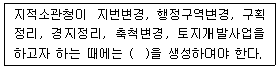
- 도곽파일
- 복제파일
- 임시파일
- 토지이동파일
(정답률: 53%)
4과목: 지적학
61. 지적공부에 등록하는 경계에 있어 경계불가분의 원칙이 적용되는 가장 큰 이유는?
- 면적의 크기에 따르기 때문이다.
- 경계의 중앙 선택 원칙 때문이다.
- 설치자의 소속으로 결정하기 때문이다.
- 경계선은 길이와 위치만 존재하기 때문이다.
(정답률: 65%)
62. 토지표시사항 등록의 심사원칙은?
- 대행심사
- 서류심사
- 실질심사
- 형식심사
(정답률: 59%)
63. 임야조사사업 당시의 사정(査定)기관으로 옳은 것은?
- 도지사
- 읍·면장
- 임야조사위원회
- 임시토지조사국장
(정답률: 55%)
64. 수등이척제에 대한 개선으로 망척제를 주장한 학자는?
- 이기
- 서유구
- 정악용
- 정악전
(정답률: 60%)
65. 토지소유권 보장제도의 변천과정으로 옳은 것은?
- 지계제도→증명제도→입안제도
- 입안제도→지계제도→증명제도
- 증명제도→입안제도→지계제도
- 지계제도→입안제도→증명제도
(정답률: 54%)
66. 지적공개주의를 실현하는 방법에 해당하지 않는 것은?
- 지적공부를 직접 열람하거나 등본에 의하여 외부에서 알 수 있도록 하는 방법
- 지적공부에 등록된 사향을 실지에 복원하여 등록된 결정 사향을 파악하는 방법
- 지적공부의 등록된 사항과 실지상황이 불일치할 경우 실지상황에 따라 변경 등록하는 방법
- 등록사항에 대하여 소유자의 신청이 없는 경우 국가가 직권으로 이를 조사 또는 측량하여 결정하는 방법
(정답률: 52%)
67. 지적제도와 등기제도가 통합된 넓은 의미의 지적제도에서의 3요소이며, 네덜란드의 J.L.G.Henssen이 구분한 지적의 3요소로만 나열된 것은?
- 소유자, 권리, 필지
- 측랑, 필지, 지적파일
- 필지, 측랑, 지적공무
- 권리, 지적도, 토지대장
(정답률: 60%)
68. 토지조사사업 당시의 재결기관(裁決維關)으로 옳은 것은?
- 도지사
- 부와 면
- 임시토지조사국장
- 고등토지조사위원회
(정답률: 65%)
69. 고려시대에 양전을 담당한 중앙기구로서의 특별관서가 아닌 것은?
- 급전도감
- 사출도감
- 절급도감
- 정치도감
(정답률: 53%)
70. 토지의 매매 및 소유자의 등록요구에 의하여 필요한 경우 토지를 지적공부에 등록하는 방법은?
- 권원등록제도
- 분산등록제도
- 수복등록제도
- 일괄등록제도
(정답률: 30%)
71. 다음 중 토지정보시스템(LIS)이 해당하는 지적은?
- 법지적
- 과세지적
- 경계지적
- 다목적지적
(정답률: 61%)
72. 다음 지적물부힐지의 유형 중 아래의 설명에 해당하는 것은?
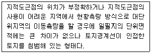
- 공백형
- 중복형
- 편위형
- 불규칙형
(정답률: 55%)
73. 다음 중 양안에 기재된 사항에 해당하지 않는 것은?
- 신구 토지 소유자
- 토지 소재, 지번, 면적
- 측량 순서, 토지 등급
- 토지 모양(지형), 사표(四標)
(정답률: 45%)
74. 토지 등록 방법인 인적편성주의에 대한 설명으로 옳은 것은?
- 개개의 토지를 중심으로 등록부를 펀성하는 방식이다.
- 당샤자의 신청 순서에 따라 순차적으로 등록 펀성하는 방식이다.
- 동일 소유자에게 속하는 모든 토지를 당해 소유자의 대장에 기록하는 방식이다.
- 2개 이상의 토지를 하나의 등기용지인 공동용지를 사용하여 등록하는 방식이다.
(정답률: 53%)
75. 지방토지조사위원회에 대한 설명으로 옳지 않은 것은?
- 각 도에 설치하였다.
- 토지사정의 자문기관이었다.
- 위원장은 조선총독부 정무총감이 맡았다.
- 위원장 1명과 상임위원 5명으로 구성되었다.
(정답률: 50%)
76. 지적의 요건에 해당하지 않는 것은?
- 경제성
- 공개성
- 안전성
- 정확성
(정답률: 28%)
77. 임야조사사업의 특징에 대한 설명으로 옳지 않은 것은?
- 토지조사사업에 비해 적은 인원으로 업무를 수행하였다.
- 토지조사사업을 시행하면서 축적된 기술을 이용하여 사업을 완성하였다.
- 면적이 넓어 토지조사사업에 비해 많은 예산을 투입하여 사업을 완성하였다.
- 임야는 토지에 비하여 경제적 가치가 낮아 정확도가 낮은 소축척을 사용하였다.
(정답률: 55%)
78. 현대지적의 일반적 기능이 아닌 것은?
- 사회적 기능
- 경제적 기능
- 법률적 기능
- 행정적 기능
(정답률: 53%)
79. 의상경계책(擬上經界策)을 주장한 양전개혁론자는?
- 이기
- 김성규
- 서유구
- 정약용
(정답률: 58%)
80. 다음 중 현존하는 우리나라의 가장 오래된 지적자료는?
- 경자양안
- 광무양안
- 신라장적
- 결수연명부
(정답률: 67%)
5과목: 지적관계법규
81. 측랑기준점의 설치를 위해 토지 등의 출입등에 따라 손실이 발생하였을 때, 손실을 보상할 자와 손실을 받은 자의 협의가 성립되지 아니한 경우 재결을 신청할 수 있는 곳은?
- 시·도지사
- 중앙지적위원회
- 행정안전부장관
- 관할 토지수용위원회
(정답률: 57%)
82. 공간정보의 구축 및 관리 등에 관한 법령상 잡종지로 지목을 설정 할 수 없는 것은?
- 야외시장
- 돌을 캐내는 곳
- 자동차운전학원의 부지
- 원상회목을 조건으로 흙을 파내는 곳으로 허가된 토지
(정답률: 54%)
83. 주된 용도의 토지에 펀입하여 1필지로 할 수 있는 종펀 토지로 옳은 것은?
- 주된 지목의 토지 면적이 1148m2인 토지로 종된 지목의 토지 면적이 116m2인 토지
- 주된 지목의 토지 면적이 2230m2인 토지로 종된 지목의 토지 면적이 231m2인 토지
- 주된 지목의 토지 면적이 3125m2인 토지로 종된 지목의 토지 면적이 228m2인 토지
- 주된 지목의 토지 면적이 3350m2인 토지로 종된 지목의 토지 면적이 332m2인 토지
(정답률: 51%)
84. 토지대장의 등록사항에 해당하지 않는 것은?
- 면적
- 지번
- 대지권 비율
- 토지의 소재
(정답률: 55%)
85. 성능검사대행자의 등록을 취소하여야 하는 경우가 아닌 것은?
- 거짓이나 부정한 방법으로 성능검사를 한 경우
- 업무정지기간 중에 계속하여 성능검사대행 업무를 한 경우
- 다른 행정기관이 관계 법렁에 따라 등록취소 또는 업무정지를 요구한 경우
- 다른 사람에게 자기의 성명 또는 상호를 사용하여 성능검사대행업무를 수행하게 한 경우
(정답률: 36%)
86. 공간정보의 구축 및 관리 등에 관한 법렁에 따른 성능검사대행자의 등록기준으로 옳은 것은?
- 기술인력 중 기술인과 기능사는 상호 대체할 수 있다.
- 기술인력에 해당하는 사람은 상시 근무하는 사람이 아니어도 된다.
- 외국인이 측량기기성능검사대행자 등록을 신청하는 경우 영업소를 설치하지 않아도 된다.
- 일반성능검사대행자와 금속관로탐지기 성능검사대행자를 중복해서 신청하는 경우에는 기술인력을 50% 감면할 수 있다.
(정답률: 42%)
87. 임야도 작성 시 구계(區界)와 동계(洞界)가 겹치는 경우 제도하는 방법은?
- 구계만 그린다.
- 동계만 그린다.
- 필지 경계만 그린다.
- 구계와 동계를 겁쳐 그린다.
(정답률: 44%)
88. 도시·군기본계획에 포함되어야 할 사향으로 옳은 것은?
- 도시개발사업이나 정비사업의 계획에 관한 사항
- 지구단위계획구역의 지정 또는 변경에 관한 사항
- 공간구조, 생활권의 설정 및 인구의 배분에 관한 사항
- 도시자연공원구역의 지정 또는 변경 계획에 관한 사항
(정답률: 26%)
89. 합병하고자 하는 4필지의 지번이 99-1, 100-10, 222, 325인 경우 지번의 결정 방법으로 옳은 것은? (단，토지소유자가 별도의 신청을 하는 경우는 고려하지 않는다.)
- 222로 한다.
- 325로 한다.
- 99-1로 한다.
- 100-10으로 한다.
(정답률: 55%)
90. 지적재조사사업을 하고자 하는 목적으로 가장 적합한 것은?
- 정확한 과세부과
- 행정구역의 조정
- 합리적인 토지개발
- 효율적인 토지관리
(정답률: 50%)
91. 공간정보의 구축 및 관리 등에 관한 법류에 따른 용어의 정의로 틀린 것은?
- “지번”이란 필지에 부여하여 지적공부에 등록한 번호를 말한다.
- “경계" 란 필지별로 경계점들을 직선으로 연결하여 지적공부에 등록한 선을 말한다.
- ”지목”이란 토지의 주된 용도에 따라 토지의 종류를 구분하여 지적공부에 등록한 것을 말한다.
- “등록전환”이란 토지대장 및 지적도에 등록된 토지를 임야대장 및 임야도에 옮겨 등록하는 것을 말한다.
(정답률: 55%)
92. 특별시·광역시·특별자치시·특별자치도·시 또는 군의 개발·정비 및 보전을 위하여 수립하는 도시·군관리계획에 포함되지 않는 것은?
- 도시개발사업이나 정비사업에 관한 계획
- 기반시설의 설치·정비 또는 개랑에 관한 계획
- 기본적인 공간구조와 장기발전방향을 제시하는 종합계획
- 용도지역·용도지구의 지정 또는 변경에 관한 계획
(정답률: 44%)
93. 토지이동으로 불 수 있는 것은?
- 경계의 정정
- 소유권의 변경
- 지상권의 변경
- 소유자의 주소변경
(정답률: 44%)
94. 지적소관청이 토지의 표시 변경에 관한 등기를 촉탁하는 사유가 아닌 것은?
- 신규등록
- 축척변경
- 등록사항의 정정
- 지번변경에 따른 지번의 부여
(정답률: 54%)
95. 지적삼각점성과표에 기록·관리하여야 하는 사항 중 필요한 경우로 한정하여 기재하는 것은?
- 자오선수차
- 경도 및 위도
- 좌표 및 표고
- 시준점의 명칭
(정답률: 47%)
96. 등기관이 토지 소유권의 이전 등기를 한 경우 지체없이 그 사실을 누구에게 알려야 하는가?
- 이해관계인
- 지적소관청
- 관할 등기소
- 행정안전부장관
(정답률: 49%)
97. 지적업무처리규정에서 사용하는 용어의 뜻에 대한 내용으로 틀린 것은?
- “지적측랑파일”이란 측량준비파일, 측량현형파일 및 측량성과파일을 말한다.
- “토탈스테이션”이란 경위의측량방법에 따른 기초측량 및 세부측량에 사용되는 장비를 말한다.
- “측랑부”란 기초측량 또는 세부측량성과를 결정하기 위하여 사용한 관측부·계산부 등 이에 수반되는 기록을 말한다.
- 기초측량에서의 “기지점”이란 지적기준점 또는 지적도면상 필지를 구획하는 선의 경계점과 상호 부합되는 지상의 경계점을 말한다.
(정답률: 44%)
98. 부동산등기법상 등기부에 관한 설명으로 옳지 않은 것은?
- 등기부는 영구히 보존하여야 한다.
- 공동인명부와 도면은 영구히 보존하여야 한다.
- 등기부는 토지등기부와 건물등기부로 구분한다.
- 등기부란 전산정보처리조직에 의하여 입력·처리된 등기정보자료를 대법원규칙으로 정하는 바에 따라 펀성한 것을 말한다.
(정답률: 42%)
99. 지적공부에 등록된 지번을 변경하여 새로이 부여할 경우 승인을 받아야 하는 자로 옳은 것은?
- 행정안전부 장관
- 군수·구청장
- 중앙지적위원회 위원장
- 특별시장·광역시장·도지사
(정답률: 47%)
100. 60일 이내에 토지의 이동 신청을 하지 않아도 되는 것은?
- 경계정정 신청
- 신규등록 신청
- 지목변경 신청
- 형질변경에 따른 분할 신청
(정답률: 24%)